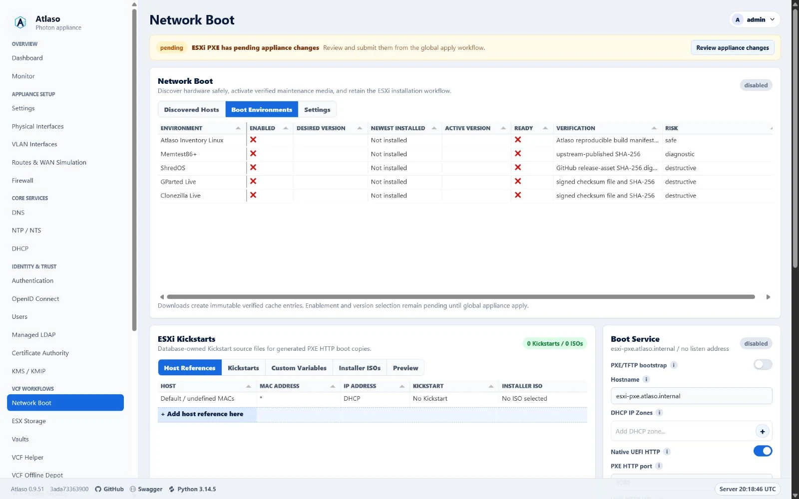
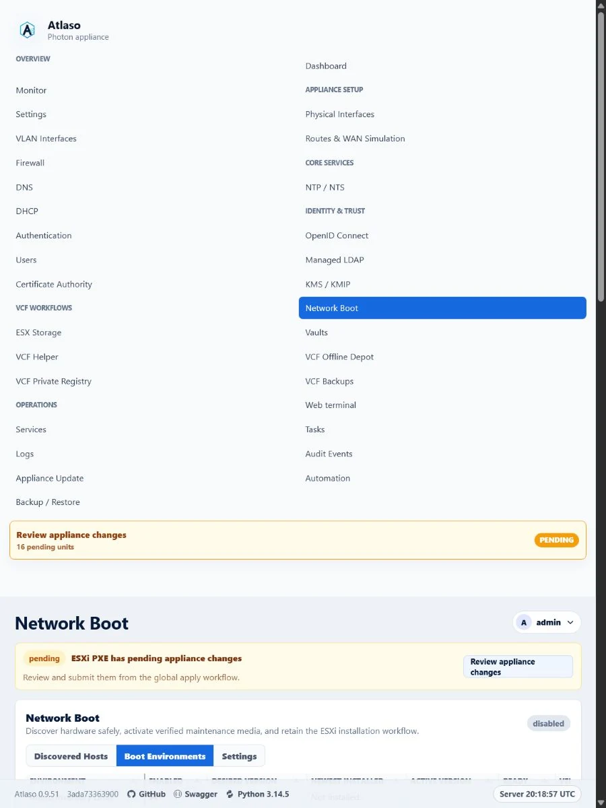

Network Boot and ESX scripted installation¶
Atlaso Network Boot provides safe hardware discovery, verified interactive maintenance environments, and the existing ESX installation workflow from one service. The detailed Broadcom-aligned ESX reference remains later in this page.
Interface overview¶
This verified appliance view provides visual orientation before you begin.

Figure: Network Boot in the verified clean-appliance desktop state.
Operate Network Boot¶
Open Network Boot at /network-boot. The former /esxi-pxe browser route
redirects here; existing ESXi API paths, the esxi_pxe apply unit, staged
configuration paths, and helper commands remain compatible.
An unknown or unassigned x86-64 machine receives a per-host iPXE menu from
/pxe/boot.ipxe. After 10 seconds it boots Atlaso Inventory Linux when that
environment is active; otherwise it exits to local disk or firmware. A known
MAC assigned to an enabled ESXi profile defaults to that ESXi entry instead. An
undefined-MAC ESXi profile is manual-only and cannot replace the safe inventory
default. All PXE and native UEFI HTTP clients load iPXE before resolving this
menu; DHCP never returns mboot.efi or PXELINUX directly. This prevents an
unassigned machine from inheriting the default ESXi installer profile. Each
menu uses the selected listener address through which that client connected, so
isolated secondary DHCP IP zones do not redirect boot artifacts
through the primary zone. Both legacy BIOS and UEFI use the bundled
undionly.kpxe or snponly.efi first stage; Secure Boot is not supported.
Atlaso binds dnsmasq TFTP explicitly to every selected IPv4 DHCP IP-zone
interface so VMware Workstation firmware can retrieve that first stage over
UDP/69 before iPXE switches to HTTP.
For an enabled ESXi Host Reference, right-click and choose Boot Inventory Linux once to override that exact MAC's next menu default for 30 minutes. The first claim retains a five-minute retry window so firmware retries remain on Inventory Linux; later boots return to the normal ESXi assignment. The request is audited and does not change the host's permanent ESXi desired state. The same row menu offers Wake host for saved references with a valid MAC. Wake-on-LAN sends one standard magic packet over UDP/9 to every distinct IPv4 broadcast derived from the effective Network Boot DHCP zones. A successful response means only that Atlaso sent the packet; it does not prove the host powered on.
Inventory Linux is a purpose-built Buildroot environment that runs from an
initramfs in RAM; it is not an Ubuntu, Debian, or Photon OS installation. It
does not mount filesystems or write target disks. Schema v2 submits bounded
structured CPU topology, populated DIMMs, every NIC and disk, storage
controllers, PCI/USB devices, and system/BIOS/baseboard/chassis identity. Sysfs
is authoritative for devices, including populated DIMMs enumerated from
kernel-exposed DMI Type-17 entries; dmidecode only enriches matching handles.
Pciutils/pci.ids enrich readable PCI names, and raw command output is never
submitted. Atlaso still accepts schema v1 and
normalizes it into retained v2 JSON in the existing report column.
Inventory startup suppresses kernel branding and displays the Atlaso appliance
boot artwork without Photon OS attribution. The local full-screen console uses
the appliance console's pale-blue header, light content, and adaptive blue
action footer across System / CPU / DIMMs, Network, and Storage
pages, with a blank light row below the header. Use N/P or 1-3 to page.
Only after successful report submission, a five-minute reboot countdown begins.
Use J/K to move through bounded list
windows when a hardware list is larger than the console viewport. Capacity is
derived from framebuffer geometry when available and otherwise from the TTY;
higher-resolution consoles therefore use their additional rows, while a normal
80x30 fallback shows up to 12 DIMMs, eight adapters, or 12 disks/controllers
before list paging is needed. The action footer spans the console and follows
the populated rows; dense pages expand it toward the terminal bottom. Silent
keyboard reads keep navigation input out of the content area. All rows clip to
the console width. Optical block
devices are identified from the authoritative sysfs peripheral type.
PCI identity is attached only to directly PCI-backed devices; controller sysfs
also retains non-PCI SCSI hosts such as Hyper-V StorVSC. Large inventories are
assembled from files as compact JSON so the 256 KiB boundary is independent of
pretty-print whitespace and Linux per-argument limits.
Page and list navigation still consume countdown time. S pauses or resumes
the remaining time and R reboots immediately; an acknowledged audited remote
reboot remains authoritative. Its startup service first obtains DHCP
configuration and confirms a default route; the Linux kernel does not inherit
iPXE's network state. The image includes a broad compatibility profile for
physical NIC and storage-controller families used by ESXi-capable x86-64 hosts
and virtual devices from VMware, Hyper-V, KVM/Proxmox/QEMU, and Xen. Exact
device support still depends on an available upstream Linux driver and
redistributable firmware; the ESXi hardware compatibility list remains a
separate vendor certification matrix. Optional interface MAC
fields reported as all-zero or broadcast placeholders are ignored; malformed
MACs remain invalid, and host identity still requires a valid DMI UUID or
usable MAC. Atlaso
retains the latest report and ten previous reports. A repeated valid DMI UUID
with disjoint MAC identities is shown as a collision and is not silently
merged; later reports for that UUID must include a usable MAC so Atlaso does
not attach DMI-only history to an arbitrary collision record.
Each report is limited to 256 KiB, 64 NICs, 128 disks, 64 storage controllers, 256 populated DIMMs, 512 PCI devices, and 256 USB devices. Individual strings and address/flag lists are also bounded; malformed hardware objects are rejected rather than retained partially.
The Discovered Hosts grid is read-only and keeps a 300 px desktop or 240 px narrow-viewport working area above the separately framed media task history. Double-click a row or focus it and press Enter to open its semantic hardware report. A compact history selector switches among retained reports without reloading the page. The selected report covers all available system, firmware, CPU, DIMM, NIC, disk/controller, PCI, and USB fields; legacy v1 fields that were never submitted are labeled Not reported instead of being inferred. Report values are inserted as text, not markup. An explicit empty address list in a v2 report is labeled None; Not reported remains reserved for an absent legacy field.
Use Print / Save as PDF to print only the selected report, or Download JSON to save a no-cache attachment containing the host identity, report metadata, and unchanged normalized payload. The exported identity is captured from the selected retained report, so later reports and heartbeat changes do not alter an older attachment. Operators with Network Boot write access can use the row context menu to Promote to ESXi, Reboot, Wake host, or Remove discovered host. Wake, reboot, and removal share Atlaso's confirmation flow. Reboot is available only for an online Inventory Linux session. Removal transactionally deletes that discovered host's commands, sessions, and reports, but retains any separately promoted ESXi desired-state reference. Promotion requires explicit hostname, a discovered MAC, address, Kickstart, installer ISO, variables, and enabled-state review. It creates desired state only.
Boot media packages and activation¶
The fixed catalog contains Atlaso Inventory Linux, Memtest86+, ShredOS, GParted
Live, and Clonezilla Live. Full appliance images preinstall the independently
versioned atlaso-inventory-linux-<version>.zip package. New Inventory builds
are final independent GitHub Releases under immutable
inventory-linux-v<version> tags; ordinary Atlaso appliance releases no longer
contain the package. An operator can still download or upload a newer verified
Inventory Linux build without updating the Atlaso Python wheel. The other
environments are disabled and uninstalled by default. Full appliance images
include GnuPG for signed checksum verification; the development VMware wheel
deployment bridge repairs that dependency on older test appliances before
installing the new wheel. The Source column
names and links to the authoritative release history from which Atlaso resolves
each download; Inventory Linux points to its independent release history.
Download latest resolves only these fixed signed endpoints:
https://mdaneri.github.io/Atlaso/updates/inventory-linux/latest/manifest.jsonhttps://mdaneri.github.io/Atlaso/updates/inventory-linux/latest/manifest.json.sig
Atlaso verifies the detached Ed25519 signature with a public key under
/etc/atlaso/update-trust.d, requires X.Y.Z+revision, and requires the package
URL to target the matching inventory-linux-v<version> tag in the Atlaso
repository. It then enforces the signed package size and SHA-256 before applying
the existing ZIP allowlist, embedded package identity, inner artifact hashes,
and atomic installation. If no independent release exists, the task tells the
operator to publish one with the Inventory Linux workflow. Atlaso versions
before 0.9.65 still search ordinary appliance releases, so they must upgrade
before downloading 2026.05.1+8; already installed Inventory media remains
usable and activation still occurs only through global appliance apply.
Download latest queues a durable pxe-media-sync
task that:
- resolves one concrete stable release from the fixed upstream;
- downloads over HTTPS with bounded retries for transient connection failures plus redirect, timeout, and size limits, or accepts the same release asset through the visible Upload action;
- verifies the published SHA-256 digest or signed checksum with the pinned project fingerprint;
- rejects unsafe archive paths and extracts only required boot files; and
- atomically installs an immutable cache under
/var/lib/atlaso/pxe/media/<environment>/<version>.
ShredOS follows its supported single-kernel PXE procedure. Atlaso resolves the
full x86-64 non-lite ISO, verifies its release-published SHA-256 digest, and
uses the pinned pycdlib parser to extract only the upstream /boot/bzImage
kernel, stored in Atlaso's cache as shredos. The generated boot.ipxe loads
that kernel with console=tty3 loglevel=3; Atlaso does not SAN-boot the raw USB
image. ShredOS uploads therefore accept the authoritative ISO rather than an
IMG file.
The verified cache is owned by the Atlaso worker account so same-version repair can atomically swap and remove its temporary backup without leaving root-owned stale media. When the same ShredOS version is already active, Atlaso publishes each repaired payload under a unique digest-qualified immutable directory and retains the last applied directory and manifest for live clients. Global appliance apply moves the applied snapshot to the replacement; a successful apply then removes superseded ShredOS snapshots that are no longer referenced by either the installed-media catalog or the applied manifest, preventing repeated repairs from consuming appliance storage. A successful sync alone cannot expose the new kernel. If a pending replacement becomes corrupt before apply, another repair publishes a new immutable identity and removes the superseded pending directory only after the replacement database row commits. Dry-run appliance validation may update the desired-state comparison baseline, but it retains the prior real-apply runtime manifest and cannot activate a pending replacement. The replacement's generated boot paths include the digest-qualified directory identity, so year-long immutable HTTP caching never assigns different bytes to the same public URL. Before the task commits its database row, Atlaso synchronizes the staged artifacts, their directories, and the environment directory containing the published rename to stable storage. First-time environment creation also synchronizes its media-root parent. A fixed-root transaction journal lets application startup finish or roll back an interrupted swap before it exposes PXE routes; recovery persists its filesystem decision before removing the journal. An interprocess lock serializes application and worker startup recovery and remains held from publication through the database outcome and filesystem cleanup. The journal also identifies the bounded transaction staging directory so recovery removes any interrupted source artifact and extracted content. A separately fsynced staging lease exists before acquisition begins; startup safely skips a live lease and removes validated orphan transaction directories even when interruption happened before journal publication. Worker startup retains the recovery check as an idempotent fallback.
Each catalog row exposes Download, Upload, and Delete newest inactive
media through its row context menu.
Upload is limited to 2 GiB and stages the file only for the durable verification
task. Atlaso still resolves the authoritative stable release metadata and
checks the uploaded bytes against the same upstream digest or signed checksum;
the operator cannot substitute an unverified checksum. Cancelling a pending
upload removes its staged artifact immediately, and worker-startup recovery
removes staged uploads left by an interrupted running task.
Deleting an inactive media version also removes terminal staged-upload
artifacts for that environment. Cleanup is blocked while an environment media
task is pending or running, and active, desired, and bundled Inventory Linux
versions cannot be removed.
The Boot media tasks panel reuses the Tasks grid and detail dialogs while
scoping live refresh, filtering, logs, and cancellation to Network Boot media
downloads and uploads. The Network Boot and ESXi Kickstarts workspaces scroll
inside the main panel so the Boot Service rail remains fixed on the right.
Distinct download requests may queue while another media sync is active; the
single worker preserves FIFO execution. Atlaso rejects only an active duplicate
for the same environment and download source. Database-backed admission keeps
that duplicate check atomic across concurrent web workers: exactly one request
queues the download and competitors receive 409 Conflict. Upload staging and
cleanup guards remain unchanged. After a download is accepted, its new task is
immediately loaded, selected, highlighted, and followed by the normal live
refresh without reloading the page.
The same menu provides a state-aware Enable or Disable action. Enable
remains unavailable until that environment has verified installed media.
Media ready indicates that verified media is installed; Active version
remains empty until the desired version is enabled and submitted through global
appliance apply.
The Network Boot page separates Network Boot and ESXi Kickstarts into primary tabs. Each primary view retains its own task-specific subtabs, while the shared Boot Service settings and apply status remain in the right rail.
Downloading never changes the active menu. Editing Enabled or Desired version creates pending state; global Appliance Apply is the only activation boundary. A failed download, verification, extraction, or apply leaves the previous active version available. Replacement media is verified completely before Atlaso publishes its immutable directory. The public iPXE menu reads host assignments, boot listeners, and default-profile artifacts from the last successfully applied snapshot. Pending host edits and pending media disablement therefore cannot change or interrupt the running boot service.
All maintenance environments are interactive. Atlaso does not automatically
run memory tests, partitioning, imaging, restoration, or disk erasure. ShredOS
opens a second menu with no timeout and Cancel selected by default; Atlaso
never supplies autonuke, device lists, or unattended erase arguments.
Installed metadata records source, version, license, digest/signature method, and verification time. A repeated sync revalidates the cached manifest and every boot artifact before reporting success; a missing or corrupt cache is replaced from the verified upstream release. This includes replacing a same-version legacy or corrupt ShredOS cache with the verified ISO-extracted kernel; global appliance apply remains the only activation boundary. Downloaded media and inventory reports are runtime data and are excluded from settings archives; desired environment enablement and version selection are included. Restore and factory reset preserve installed-media metadata while clearing active activation state.
API and session boundaries¶
Generic automation uses /api/v1/network-boot with read:pxe or write:pxe.
Viewer has read access; service-admin and admin have read/write access. Legacy
read:esxi-pxe does not grant access to discovered hosts or maintenance media.
Read access includes
GET /hosts/{host_id}/reports/{report_id}/download. Write access controls
DELETE /hosts/{host_id}, POST /hosts/{host_id}/wake, and
POST /esxi-hosts/{host_id}/wake. A report download returns 404 when the report
does not belong to the requested host rather than exposing cross-host history.
The attachment derives its host identity and summary metadata from the selected
retained report, so downloading a historical report remains byte-stable after a
newer report or heartbeat changes the current discovered-host state.
Inventory Linux receives a one-use report session with an eight-hour maximum lifetime. Only the token hash is persisted. The bearer token is sent in the authorization header, never a URL, audit, or browser UI. Reports bind the session to the presented identity; replays and mismatches are rejected. Reboot-command acknowledgment is idempotent so the client can retry an uncertain response before rebooting. Public endpoint rate-limit state expires inactive client entries and remains bounded across address-rotating clients. Heartbeats run every 10 seconds, and the UI treats a host as offline after 30 seconds. Reboot uses the live report session; Wake-on-LAN is an immediate, audited, no-retry packet send based only on the server-owned discovered or ESXi reference MAC. Atlaso commits an attributable pending audit before the UDP side effect and updates that record with the delivery outcome. A missing valid MAC or IPv4 broadcast target is a recoverable conflict, while a UDP send failure before any delivery is reported as a retryable service error. If a later broadcast fails, Atlaso returns and audits the targets already sent so callers do not automatically duplicate that partial delivery. Runtime inventory storage retains at most 512 discovered hosts, 2,048 reports across all hosts, 11 reports per host, and 4,096 sessions; expired sessions and the oldest inactive inventory are pruned as new sessions and reports arrive. Hosts with a recent heartbeat or an unacknowledged command are never selected for storage eviction.
Manage ESXi Host References¶
Open ESXi Kickstarts, select Host References, and use + Add host reference here to open the guided Host Reference workflow. When an eligible Network Boot inventory host has at least one valid MAC that is not already used by a Host Reference, the workflow defaults to Discovered Network Boot host. Select the discovered host and review the suggested hostname, one of its available MAC addresses, and its latest assigned address. Select Manual host instead to enter a hostname, MAC address, and optional IP address directly.
The remaining steps select the Kickstart, installer ISO, non-secret variables, and desired Enabled state before showing the final review. New references opened from the Host References add row default to Enabled. Promotion opened directly from a discovered-host action retains its explicit disabled default. Saving creates or updates desired state only; use the global Review appliance changes workflow to enforce it on the appliance.
Double-click an existing reference or choose Edit host reference from its row menu to reopen the same workflow. The Enabled value remains directly toggleable in the collection. The row menu also retains Boot Inventory Linux once, Wake host, and Delete host reference where applicable. The Default / undefined MACs profile remains a compact inline exception for its Kickstart, installer ISO, and Enabled values. Manual add and edit require ESXi PXE write access; discovered-host promotion also requires Network Boot write access.
ESX technical reference¶
The remainder is a cleaned Markdown copy of Broadcom Tech Docs content for ESX
installation, Kickstart, boot.cfg, PXELINUX, iPXE, and native UEFI HTTP boot.
Atlaso note: ESXi PXE host-specific boot.cfg artifacts should pass Kickstart URLs as
/pxe/esxi/ks/<file>.cfg?mac=<normalized-mac>. The MAC query parameter is required so Atlaso can render restricted
{{variable}} Kickstart markers from the database source and the selected host's custom variable map. Atlaso
intentionally does not infer the host MAC from request source IP or dnsmasq leases.
Kickstarts declare vault access directly in source with {{vault.<vaultname>.<key>.username}},
{{vault.<vaultname>.<key>.password}}, or a configured URI from {{vault.<vaultname>.<key>.uri1}} through
{{vault.<vaultname>.<key>.uri9}}. The Monaco Editor suggests authorized exact markers after {{ without loading
credential values. Atlaso validates every referenced vault, key, and subkey when source is saved and again when an
enabled assigned host requests the dynamic response. Source downloads and previews retain the marker, missing or
renamed references fail closed, and dynamic responses disable caching. See Vaults for marker examples,
URI ordering, and secret-handling boundaries.
The management UI reports invalid Kickstart references and uploads with bounded operator guidance and does not render raw backend exception text.
Define non-secret custom values in the Custom Variables tab before Installer ISOs. The final + Add custom
variable control in the ESXi PXE tablist opens a two-step Definition and Review wizard; double-clicking an existing
row or choosing Edit from its context menu opens the same wizard, while Remove deletes the definition after
confirmation. Each row records the variable name, operator description, and an optional default. Monaco offers those
rows as concrete {{custom.<name>}} completions. A matching value in a Host References variables JSON object overrides
the default for that host; when no override exists, Atlaso renders the configured default. Removing a referenced
definition makes the Kickstart invalid until the definition is restored or the marker is removed. Use vault markers
instead of custom-variable defaults for credentials or other secrets.
Token-based automation can manage the same non-secret catalog through
/api/v1/esxi-pxe/custom-variables before creating or updating Kickstarts that use {{custom.*}} markers. Catalog
definitions and defaults are included in settings archives so restored Kickstarts retain their required definitions.
Terminology note: Broadcom documentation uses ESX in these 9.x installation pages. Older VMware material often used ESXi.
Table of contents¶
- Scripted installation approaches
- Enter boot options for a scripted install
- Boot options
- Default
ks.cfginstallation script boot.cfgfile- Installation and upgrade script commands
- Network boot background
- PXELINUX configuration files
- Boot the ESX installer by using PXE and TFTP
- Boot the ESX installer by using iPXE and HTTP
- Boot the ESX installer by using native UEFI HTTP
- Sample DHCP configurations
Scripted installation approaches¶
You can install ESX on multiple machines by using either:
- A single installation script for all machines.
- A separate installation script for each machine.
For example, disk names can vary from host to host, so one common setting to control in a script is the disk selected for ESX installation.
| Scenario | Recommended action |
|---|---|
| Always install on the first disk across multiple machines. | Create one script. |
| Install ESX on a different disk for each machine. | Create multiple scripts. |
For the commands required to specify the installation disk, see Installation and upgrade script commands.
Enter boot options for a scripted install¶
At boot time, you might need to specify options to access the kickstart file.
- In the boot loader, press Shift+O to edit boot options.
- For PXE boot installation, pass options through the
kerneloptline of theboot.cfgfile. - To specify the location of the installation script, set
ks=filepath, wherefilepathis the location of the kickstart file. - If
ks=filepathis omitted, the text installer runs instead of a scripted install.
Manual boot-option example¶
At the runweasel prompt, type the ks= location plus any other boot command-line options:
ks=http://00.00.00.00/kickstart/ks-osdc-pdp101.cfg nameserver=00.00.0.0 ip=00.00.00.000 netmask=255.255.255.0 gateway=00.00.00.000
Boot options¶
Supported boot options for ESX installation¶
| Boot option | Description |
|---|---|
BOOTIF=hwtype-MAC address |
Similar to netdevice, except in PXELINUX format as described by the IPAPPEND option in SYSLINUX. |
gateway=ip address |
Sets the network gateway used to download the installation script and installation media. |
ip=ip address |
Sets a static IP address used to download the installation script and installation media. PXELINUX format is also supported. |
ks=cdrom:/path |
Performs a scripted installation with the script at path on the CD-ROM drive. Each CD-ROM is mounted and checked until the file is found. |
ks=file://path |
Performs a scripted installation with the script at path. |
ks=protocol://serverpath |
Performs a scripted installation with a script located on the network. Supported protocols are http, https, ftp, and nfs. Example: ks=nfs://host/porturl-path. |
ks=usb |
Performs a scripted installation using ks.cfg from the root of an attached USB drive. Only FAT16 and FAT32 are supported. |
ks=usb:/path |
Performs a scripted installation with the script at the specified USB path. |
ksdevice=device |
Uses a specific network adapter when looking for the installation script and media. Specify a MAC address, such as 00:50:56:C0:00:01, or a vmnicNN name. |
nameserver=ip address |
Specifies a DNS server used to download the installation script and media. |
netdevice=device |
Uses a specific network adapter when looking for the installation script and media. Specify a MAC address or vmnicNN. |
netmask=subnet mask |
Specifies the subnet mask for the network interface used to download the script and media. |
vlanid=vlanid |
Configures the network card to use the specified VLAN. |
systemMediaSize |
Increases the size of system storage partitions on the boot media. Supported values are default and max. |
systemMediaSize values:
| Value | Meaning |
|---|---|
default |
138 GB. |
max |
Consume all available space, useful for multi-terabyte servers. |
Important: The ESX installer does not validate SSL certificates for URLs. Verify URLs before using them.
Default ks.cfg installation script¶
The default ks.cfg installation script is located in the initial RAM disk at:
You can specify the default script by using this boot option:
When installing ESX using the default ks.cfg script, the default root password is:
You cannot modify the default script on the installation media. After installation, use the vSphere Client to log in to the vCenter managing the ESX host and modify settings.
With ESX 8.0 and later, if the system has supported data processing units (DPUs), the ks.cfg script can also install
ESX on the DPUs.
Default sample script¶
# Sample scripted installation file
# Accept the VMware End User License Agreement
vmaccepteula
# Replace this placeholder with a SHA-512 crypt hash before deployment
rootpw --iscrypted $6$REPLACE_WITH_SHA512_CRYPT_HASH
# Install on the first local disk available on the machine
install --firstdisk --overwritevmfs
# If the system has DPUs, also specify a PCI slot:
# install --firstdisk --overwritevmfs --dpupcislots=<PCIeSlotID>
# Set the network to DHCP on the first network adapter
network --bootproto=dhcp --device=vmnic0
# A sample post-install script
%post --interpreter=python --ignorefailure=true
import time
stampFile = open('/finished.stamp', mode='w')
stampFile.write(time.asctime())
boot.cfg file¶
The boot loader configuration file, boot.cfg, specifies:
- The kernel.
- Kernel options.
- Boot modules used by
mboot.c32ormboot.efi.
The file is provided in the ESX installer. Modify the kernelopt line to specify the installation script location or
pass other boot options.
boot.cfg syntax¶
# boot.cfg -- mboot configuration file
# Any line preceded with '#' is a comment.
title=STRING
prefix=DIRPATH
kernel=FILEPATH
kernelopt=STRING
modules=FILEPATH1---FILEPATH2...---FILEPATHn
# Any other line must remain unchanged.
boot.cfg commands¶
| Command | Description |
|---|---|
title=STRING |
Sets the boot loader title to STRING. |
prefix=DIRPATH |
Optional. Adds DIRPATH/ before every FILEPATH in the kernel= and modules= commands that does not already start with / or http://. |
kernel=FILEPATH |
Sets the kernel path to FILEPATH. |
kernelopt=STRING |
Appends STRING to the kernel boot options. |
modules=FILEPATH1---FILEPATH2...---FILEPATHn |
Lists modules to load, separated by three hyphens: ---. |
Installation and upgrade script commands¶
To modify the default installation or upgrade script, or to create your own, use the supported kickstart commands.
To determine which disk to install or upgrade ESX on, the installation script requires one of these commands:
installupgradeinstallorupgrade
The install command creates the default partitions, including a VMFS datastore that occupies all available space after
other partitions are created.
With ESX 8.0 and later, if the system has supported DPUs, consider installation or reinstallation of ESX on DPUs along with ESX on hosts. ESX update and upgrade on DPUs is not supported by interactive or scripted methods. Use vSphere Lifecycle Manager for DPU update or upgrade.
The use of SD and USB devices for storing ESX-OSData partitions is deprecated. SD and USB devices can only be used to
create boot bank partitions: boot-bank 0 and boot-bank 1. You can provide a persistent disk of at least 32 GB for
ESX-OSData by using systemDisk with the install command.
Core commands¶
| Command | Required | Description |
|---|---|---|
accepteula or vmaccepteula |
Yes | Accepts the ESX license agreement. |
clearpart |
No | Clears existing partitions on the disk. Requires install. Carefully edit this command in existing scripts. |
dryrun |
No | Parses and checks the installation script but does not install. |
install |
Conditional | Specifies a fresh installation. One of install, upgrade, or installorupgrade is required. |
installorupgrade |
Conditional | Installs or upgrades. One of install, upgrade, or installorupgrade is required. |
keyboard |
No | Sets the keyboard type. |
network |
No | Specifies network settings for the installed system. |
paranoid |
No | Causes warning messages to interrupt installation. Without it, warnings are logged. |
part or partition |
No | Creates an extra VMFS datastore on the system. Cannot be used on the same disk as install. |
reboot |
No | Reboots the machine after scripted installation completes. |
rootpw |
Yes | Sets the root password. |
serialnum or vmserialnum |
No | Configures licensing. Starting with ESX 9.0, ESX is licensed automatically after vCenter is licensed. |
upgrade |
Conditional | Specifies an upgrade. One of install, upgrade, or installorupgrade is required. |
%include or include |
No | Specifies another installation script to parse. |
%pre |
No | Runs a script before kickstart configuration is evaluated. |
%post |
No | Runs after package installation is complete. Multiple sections run in order. |
%firstboot |
No | Creates an init script that runs only during first boot. It does not run if Secure Boot is enabled. |
clearpart options¶
| Option | Description |
|---|---|
--drives= |
Removes partitions on the specified drives. |
--alldrives |
Allows clearing partitions on every drive. |
--ignoredrives= |
Removes partitions on all drives except those specified. Required unless --drives= or --alldrives is specified. |
--overwritevmfs |
Allows overwriting VMFS partitions on specified drives. By default, VMFS partitions are not overwritten. |
--firstdisk=disk-type1[,disk-type2,...] |
Partitions the first eligible disk found using the specified filter order. |
Default disk eligibility order for --firstdisk:
- Locally attached storage:
local - Network storage:
remote
You can override the default order with a comma-separated filter list. Filters can include ESX state, model/vendor information, or VMkernel driver names. Example:
Useful filters:
| Filter | Meaning |
|---|---|
esx |
First disk with ESX installed. |
localesx |
Local storage that contains an ESX image. |
remoteesx |
Remote storage that contains an ESX image. |
model / vendor values |
Match by device model or vendor text. |
| VMkernel driver name | Match disks using a specific driver, such as mptsas. |
install, upgrade, and installorupgrade disk options¶
| Option | Applies to | Description |
|---|---|---|
--disk= or --drive= |
install, upgrade, installorupgrade |
Specifies the disk to partition. Use a disk name or full ESX filesystem path. |
--firstdisk=disk-type1[,disk-type2,...] |
install, upgrade, installorupgrade |
Partitions the first eligible disk found using the filter order. |
--ignoressd |
install with --firstdisk |
Excludes SSDs from eligibility. Invalid with --disk, --drive, upgrade, and installorupgrade. |
--overwritevsan |
install, installorupgrade |
Required when installing on a disk that is part of a vSAN disk group. If no vSAN partition exists on the selected disk, installation fails. |
--overwritevmfs |
install, installorupgrade |
Allows installation where an existing VMFS datastore exists. Required to overwrite VMFS during install. |
--preservevmfs |
install |
Preserves an existing VMFS datastore during installation. |
--novmfsondisk |
install |
Prevents a VMFS partition from being created on this disk. Use with --overwritevmfs if a VMFS partition exists. |
--systemdisk |
install |
When booting from USB or SD, specifies the local persistent disk for ESX-OSData. |
--repartitionsystemdisk |
install |
Repartitions the persistent disk specified by systemDisk if it is not empty or contains a datastore. |
--forceunsupportedinstall |
install |
Blocks the installation of deprecated CPUs. |
Disk examples:
install --disk=naa.6d09466044143600247aee55ca2a6405 --overwritevmfs
install --disk=/vmfs/devices/disks/mpx.vmhba1:C0:T0:L0 --overwritevmfs
install --firstdisk=local --overwritevmfs
install --firstdisk=usb --systemDisk=<diskID>
vSAN overwrite behavior:
| Selected disk | Result |
|---|---|
| SSD in a vSAN disk group | The SSD and all underlying HDDs in the same disk group are wiped. |
| HDD in a disk group larger than two disks | Only the selected HDD is wiped. |
| HDD in a disk group with two or fewer disks | The SSD and selected HDD are wiped. |
If a local persistent disk is unavailable, or the disk is less than 32 GB, warning messages appear, but installation continues.
Keyboard types¶
Supported keyboard values include:
Belgian
Brazilian
Croatian
Czechoslovakian
Danish
Estonian
Finnish
French
German
Greek
Icelandic
Italian
Japanese
Latin American
Norwegian
Polish
Portuguese
Russian
Slovenian
Spanish
Swedish
Swiss French
Swiss German
Turkish
Ukrainian
United Kingdom
US Default
US Dvorak
Licensing¶
Starting with ESX 9.0, ESX is no longer licensed manually. After licensing the connected vCenter instance, ESX hosts are licensed automatically.
network command options¶
| Option | Description |
|---|---|
--bootproto=[dhcp\|static] |
Uses DHCP or static networking. |
--device= |
Specifies the uplink device by MAC address or vmnicNN, for example vmnic0. |
--ip= |
Static IP address. Required with --bootproto=static; ignored otherwise. |
--gateway= |
Default gateway. Used with --bootproto=static. |
--nameserver= |
Primary DNS server. Used with --bootproto=static. Can accept two IPs, for example --nameserver="10.126.87.104,10.126.87.120". |
--netmask= |
Subnet mask. Used with --bootproto=static. |
--hostname= |
Host name for the installed system. |
--vlanid= |
VLAN ID, from 1 to 4096. Used with DHCP or static. |
--addvmportgroup=(0\|1) |
Whether to add the VM Network port group. Default is 1. |
Example:
network --bootproto=static \
--device=vmnic0 \
--ip=192.168.10.51 \
--netmask=255.255.255.0 \
--gateway=192.168.10.1 \
--nameserver="192.168.10.10,1.1.1.1" \
--hostname=esx01.lab.local \
--vlanid=10 \
--addvmportgroup=0
part or partition command options¶
| Option | Description |
|---|---|
datastore name |
Specifies where the partition is mounted. |
--ondisk= or --ondrive= |
Specifies the disk or drive where the partition is created. |
--onfirstdisk=disk-type1[,disk-type2,...] |
Creates the datastore on the first eligible disk matching the filter order. |
Script section commands¶
%include or include¶
Specifies another installation script to parse:
%pre¶
Runs before the kickstart configuration is evaluated. It can generate files for inclusion in the kickstart file.
| Option | Description |
|---|---|
--interpreter=[python\|busybox] |
Interpreter to use. Default is busybox. |
%post¶
Runs after package installation completes. Multiple %post sections run in order.
| Option | Description |
|---|---|
--interpreter=[python\|busybox] |
Interpreter to use. Default is busybox. |
--timeout=secs |
Maximum runtime before the script is stopped. |
--ignorefailure=[true\|false] |
If true, installation is considered successful even if the %post script fails. |
%firstboot¶
Runs only during first boot. It does not run on subsequent boots.
| Option | Description |
|---|---|
--interpreter=[python\|busybox] |
Interpreter to use. Default is busybox. |
Warning:
%firstbootsemantics are not checked until the system boots for the first time. Errors might not appear until after installation completes.%firstbootdoes not run if Secure Boot is enabled.
Disk device names¶
| Format | Example | Description |
|---|---|---|
| NAA | naa.6d09466044143600247aee55ca2a6405 |
SCSI INQUIRY identifier. |
| EUI | eui.3966623838646463 |
SCSI INQUIRY identifier. |
| T10 | t10.SanDisk00Cruzer_Blade000000004C530001171118101244 |
SCSI INQUIRY identifier. |
| VML | vml.00025261 |
Legacy VMkernel identifier. |
| MPX | mpx.vmhba0:C0:T0:L0 |
Path-based identifier. |
Network boot background¶
TFTP server¶
Trivial File Transfer Protocol (TFTP) is similar to FTP and is typically used for network booting systems or loading firmware on devices such as routers.
- TFTP is available on Linux and Windows.
- Most Linux distributions include
tftp-hpa. - If you need a supported solution, use a supported TFTP server from your vendor.
- On Windows, the Broadcom text mentions
tftpd32version 2.11 or later.
SYSLINUX and PXELINUX¶
For PXE in a legacy BIOS environment, you must understand the boot environment:
- SYSLINUX is an open-source boot environment for legacy BIOS firmware.
- The ESX BIOS boot loader,
mboot.c32, runs as a SYSLINUX plugin. - SYSLINUX can boot from several media types, including disk, ISO, and network.
- PXELINUX is a SYSLINUX configuration for booting from a TFTP server according to the PXE standard.
When PXELINUX boots the ESX installer, these files are transferred by TFTP:
pxelinux.0mboot.c32- PXELINUX configuration file
- Kernel
- Boot modules
VMware builds the mboot.c32 plugin to work with SYSLINUX 3.86 and tests PXE booting only with that version. Other
versions might be incompatible.
iPXE¶
iPXE is open-source software that provides HTTP support for network boot. It can be used to perform the initial boot.
VMware includes a build of iPXE as part of Auto Deploy. The source tree for that build is available in the Open Source Disclosure Package for VMware vCenter.
UEFI PXE and UEFI HTTP¶
Most UEFI firmware natively includes PXE support and can boot from a TFTP server. The firmware can directly load the ESX UEFI boot loader:
Additional software such as PXELINUX is not required for UEFI PXE.
Some UEFI firmware supports native UEFI HTTP boot, introduced in UEFI specification version 2.5. With UEFI HTTP boot, firmware can load the ESX boot loader from an HTTP server without additional software such as iPXE.
Apple Macintosh products do not include PXE boot support. They use an Apple-specific network boot protocol instead.
Alternative network boot approaches¶
Alternative approaches include:
- Configure DHCP to provide different boot-loader filenames to different hosts by MAC address or other criteria.
- Use iPXE as the initial boot loader to chain to different installers or scripts.
PXELINUX configuration files¶
This section gives general PXELINUX configuration information. For syntax details, see the SYSLINUX documentation.
Required files¶
In the PXE configuration file, include paths to:
| File | Purpose |
|---|---|
mboot.c32 |
ESX boot loader for BIOS systems. |
boot.cfg |
Boot loader configuration file. |
PXE configuration filename¶
The PXELINUX initial boot file, pxelinux.0, tries to load a PXE configuration file in this order:
- MAC address of the target ESX host, prefixed with ARP type code
01for Ethernet. - Target ESX host IP address in hexadecimal notation.
default.
| Filename choice | Example | Use case |
|---|---|---|
01-mac_address_of_target_ESX_host |
01-23-45-67-89-0a-bc |
Host-specific configuration. |
| Hexadecimal target IP | Depends on host IP | Host-specific configuration by IP. |
default |
default |
Fallback/default configuration. |
PXE configuration file location¶
Save PXELINUX configuration files under:
Example for a host whose MAC address is 00-21-5a-ce-40-f6:
Boot the ESX installer by using PXE and TFTP¶
This procedure supports both UEFI and legacy BIOS hosts.
Prerequisites¶
| Requirement | Notes |
|---|---|
| ESX installer ISO image | Downloaded from the Broadcom Support Portal. |
| Supported target host hardware | Check the Broadcom Compatibility Guide for the ESX version. |
| PXE-capable NIC | Required on the target ESX host. |
| DHCP server | Must be configurable for PXE booting. |
| TFTP server | Required. |
| Network security | Allow TFTP traffic, UDP port 69. |
| Firmware/networking | Legacy BIOS supports IPv4 only. UEFI PXE supports IPv4 or IPv6. |
| Optional kickstart file | Used for scripted installation. |
| VLAN support | Use a native VLAN in most cases. If specifying VLAN ID for PXE boot, verify NIC support. |
| SYSLINUX 3.86 | Required for legacy BIOS systems. |
For legacy BIOS machines, the procedure supports booting multiple ESX installer versions using the same pxelinux.0
loader and different PXELINUX configuration files based on MAC address.
For UEFI machines, the procedure supports booting multiple ESX installer versions using the same mboot.efi loader and
different boot.cfg files based on MAC address.
Legacy BIOS PXELINUX setup¶
- Obtain SYSLINUX version 3.86.
- Unpack it.
- Copy
pxelinux.0to the top-level/tftpbootdirectory. - Create a PXELINUX configuration file.
Example PXELINUX configuration:
DEFAULT install
NOHALT 1
LABEL install
KERNEL ESX-9.x.x-XXXXXX/mboot.c32
APPEND -c ESX-9.x.x-XXXXXX/boot.cfg
IPAPPEND 2
ESX-9.x.x-XXXXXX is the TFTP subdirectory containing the ESX installer files.
Save the PXELINUX configuration under:
| Desired behavior | Filename |
|---|---|
| Same installer for all hosts | default |
| Different installer for one host | 01-mac_address_of_target_ESX_host, for example 01-23-45-67-89-0a-bc |
UEFI PXE setup¶
- Copy these files from the ESX installer ISO to
/tftpboot:
- Rename
efi/boot/bootx64.efito:
Newer versions of mboot.efi can generally boot older ESX versions. Older versions might not boot newer ESX versions.
If you boot different ESX versions, use mboot.efi from the newest ESX version.
Common PXE/TFTP installer setup¶
-
Configure the DHCP server.
-
Create a TFTP subdirectory for the ESX installer files, for example:
-
Copy the ESX installer image contents into that directory.
-
Modify
boot.cfg.
Add a prefix line:
Then apply these edits:
- If filenames in
kernel=andmodules=begin with/, remove the leading/. - If
kernelopt=containscdromBoot, remove onlycdromBoot. - For scripted installation, add
kernelopt=after thekernelcommand to specify the kickstart location.
Example:
UEFI host-specific boot.cfg¶
| Desired behavior | Action |
|---|---|
| Same installer for all UEFI hosts | Copy or link boot.cfg to /tftpboot/boot.cfg. |
| Different installer per UEFI host | Create /tftpboot/01-mac_address_of_target_ESX_host/ and place that host's boot.cfg there. |
Example host-specific path:
Boot the ESX installer by using iPXE and HTTP¶
You can use iPXE to boot the ESX installer from an HTTP server. The prerequisites and steps depend on whether the host uses UEFI or legacy BIOS firmware.
Prerequisites for iPXE and HTTP¶
| Requirement | Notes |
|---|---|
| ESX installer ISO image | Downloaded from the Broadcom Support Portal. |
| Supported target host hardware | Check the Broadcom Compatibility Guide. |
| PXE-capable NIC | Required on the target ESX host. |
| DHCP server | Must be configurable for PXE booting. |
| TFTP server | Required for initial iPXE/PXE boot. |
| TFTP network access | Allow UDP port 69. |
| HTTP server | Must be accessible by target ESX hosts. |
| Firmware/networking | Legacy BIOS supports IPv4 only. UEFI PXE supports IPv4 or IPv6. |
| Optional kickstart file | Used for scripted installation. |
| VLAN support | Use a native VLAN in most cases. If specifying VLAN ID, verify NIC support. |
| SYSLINUX 3.86 | Required for legacy BIOS systems. |
Build and copy iPXE¶
Obtain the iPXE source code and build the required binary.
For legacy BIOS hosts:
For UEFI hosts:
Copy the resulting file to your TFTP root:
Legacy BIOS with PXELINUX¶
For legacy BIOS hosts, also configure PXELINUX:
- Obtain SYSLINUX 3.86.
- Copy
pxelinux.0to/tftpboot. - Create a PXELINUX configuration file.
Example:
DEFAULT install
NOHALT 1
LABEL install
KERNEL ESX-9.x.x-XXXXXX/mboot.c32
APPEND -c ESX-9.x.x-XXXXXX/boot.cfg
IPAPPEND 2
Save the file under:
| Desired behavior | Filename |
|---|---|
| Same installer for all hosts | default |
| Different installer for one host | 01-mac_address_of_target_ESX_host, for example 01-23-45-67-89-0a-bc |
UEFI iPXE setup¶
For UEFI hosts:
- Copy
efi/boot/bootx64.efifrom the ESX ISO to/tftpboot. - Rename it to
mboot.efi.
Use the newest mboot.efi if you plan to boot multiple ESX versions.
HTTP installer layout¶
-
Configure DHCP.
-
Create an HTTP directory with the same name as the ESX installer version, for example:
-
Copy the ESX installer image contents into that directory.
-
Modify
boot.cfg.
Add:
Then apply these edits:
- Remove leading
/fromkernel=andmodules=paths. - Remove only
cdromBootfromkernelopt=if present. - For scripted installs, add a
kernelopt=line pointing to the kickstart file.
Example:
UEFI host-specific boot.cfg for iPXE/HTTP¶
| Desired behavior | Action |
|---|---|
| Same installer for all UEFI hosts | Copy or link boot.cfg to /tftpboot/boot.cfg. |
| Different installer per UEFI host | Create /tftpboot/01-mac_address_of_target_ESX_host/ and place that host's boot.cfg there. |
Example:
Boot the ESX installer by using native UEFI HTTP¶
Native UEFI HTTP boot does not require PXELINUX or iPXE if the firmware supports HTTP boot.
Prerequisites for using native UEFI HTTP¶
| Requirement | Notes |
|---|---|
| UEFI firmware with HTTP boot | Required on the ESX host. |
| ESX installer ISO image | Downloaded from the Broadcom Support Portal. |
| Supported target host hardware | Check the Broadcom Compatibility Guide. |
| UEFI networking support | Required on the target NIC. |
| DHCP server | Must be configurable for UEFI HTTP booting. |
| Optional kickstart file | Used for scripted installation. |
| VLAN support | Use a native VLAN in most cases. If specifying VLAN ID for HTTP(S) boot, verify NIC support. |
Native UEFI HTTP supports booting multiple ESX installer versions. You can use the same mboot.efi initial boot loader
for all targets and provide different boot.cfg files by MAC address.
Do not mix IPv4 and IPv6 during the boot process. Use either IPv4 or IPv6 consistently.
HTTP boot-loader setup¶
- Copy
efi/boot/bootx64.efifrom the ESX ISO to a directory on the HTTP server. - Rename it to
mboot.efi.
Example:
Use mboot.efi from the newest ESX version if you plan to boot multiple installer versions.
HTTP installer layout¶
-
Configure DHCP.
-
Create a directory on the HTTP server for the ESX installer, for example:
-
Copy the ESX installer image contents into that directory.
-
Modify
boot.cfg.
Add:
Then apply these edits:
- Remove leading
/from filenames inkernel=andmodules=. - Remove only
cdromBootfromkernelopt=if present. - For scripted installation, add
kernelopt=after thekernelcommand and point it to the kickstart file.
Example:
Booting a VM with UEFI HTTP boot¶
For virtual machines, you can use these VM configuration parameters:
| Parameter | Description | Example |
|---|---|---|
networkBootProtocol |
Boot protocol, IPv4 or IPv6. | networkBootProtocol = httpv4 |
networkBootUri |
HTTP URL to the ESX boot loader. | networkBootUri = http://xxx.xxx.xx.x/esx9.xxxx/efi/boot/bootx64.efi |
Default vs host-specific boot.cfg¶
| Desired behavior | Action |
|---|---|
| Same installer for all UEFI HTTP hosts | Add boot.cfg to the same directory as mboot.efi, for example http://www.example.com/esx/boot.cfg. |
| Different installer per UEFI HTTP host | Create a subdirectory named with the target host MAC address, for example 01-23-45-67-89-0a-bc, and place the custom boot.cfg there. |
Example host-specific URL:
Hosts without a custom boot.cfg on the HTTP server boot from the default boot.cfg file.
Sample DHCP configurations¶
The DHCP server must provide enough boot information for the ESX host to find its initial boot loader.
- For PXE boot, DHCP provides the address of the TFTP server and the boot loader filename, such as
pxelinux.0,mboot.efi,undionly.kpxe, orsnponly.efi. - For native UEFI HTTP boot, DHCP provides an HTTP URL to the initial boot loader, usually
mboot.efi. - Do not run a second DHCP server on a network that already has one. Multiple DHCP replies can give hosts conflicting IP addresses or the wrong boot loader information.
- The examples below are ISC DHCP-style snippets, not complete DHCP server configurations.
- For Microsoft DHCP or another DHCP server, map these concepts to that server's equivalent of
next-server,filename, and DHCPv6 bootfile URL options.
PXE and TFTP with IPv4¶
This example PXE boots ESX from a TFTP server at IPv4 address xxx.xxx.xxx.xxx.
# ISC DHCP server configuration file snippet.
# This is not a complete configuration file.
allow booting;
allow bootp;
option client-system-arch code 93 = unsigned integer 16;
class "pxeclients" {
match if substring(option vendor-class-identifier, 0, 9) = "PXEClient";
next-server xxx.xxx.xxx.xxx;
if option client-system-arch = 00:07 or option client-system-arch = 00:09 {
filename = "mboot.efi";
} else {
filename = "pxelinux.0";
}
}
When a machine attempts to PXE boot, DHCP provides an IP address and the location of either pxelinux.0 or mboot.efi
on the TFTP server.
PXE and TFTP with IPv6¶
This example PXE boots ESX from a TFTP server at IPv6 address xxxx:xxxx:xxxx:xxxx::xxxx.
# ISC DHCPv6 server configuration file snippet.
# This is not a complete configuration file.
allow booting;
allow bootp;
option dhcp6.bootfile-url code 59 = string;
option dhcp6.bootfile-url "tftp://[xxxx:xxxx:xxxx:xxxx::xxxx]/mboot.efi";
When a machine attempts to PXE boot, DHCPv6 provides an IP address and the location of mboot.efi on the TFTP server.
iPXE and HTTP with IPv4¶
This example boots ESX by first loading iPXE from a TFTP server at IPv4 address xxx.xxx.xxx.xxx.
# ISC DHCP server configuration file snippet.
# This is not a complete configuration file.
allow booting;
allow bootp;
option client-system-arch code 93 = unsigned integer 16;
class "pxeclients" {
match if substring(option vendor-class-identifier, 0, 9) = "PXEClient";
next-server xxx.xxx.xxx.xxx;
if option client-system-arch = 00:07 or option client-system-arch = 00:09 {
if exists user-class and option user-class = "iPXE" {
# Instruct iPXE to load mboot.efi as secondary boot loader.
filename = "mboot.efi";
} else {
# Load the snponly.efi build of iPXE as the initial boot loader.
filename = "snponly.efi";
}
} else {
if exists user-class and option user-class = "iPXE" {
# Instruct iPXE to load PXELINUX as secondary boot loader.
filename = "pxelinux.0";
} else {
# Load the undionly.kpxe build of iPXE as the initial boot loader.
filename = "undionly.kpxe";
}
}
}
Flow:
- The host PXE boots and receives either
undionly.kpxefor legacy BIOS orsnponly.efifor UEFI. - iPXE starts and asks DHCP again.
- DHCP detects
option user-class = "iPXE"and returns the second-stage loader: - legacy BIOS:
pxelinux.0 - UEFI:
mboot.efi - iPXE remains resident, giving the boot process HTTP capability for loading additional files.
iPXE and HTTP with IPv6¶
This example boots ESX by first loading iPXE from a TFTP server at IPv6 address xxxx:xxxx:xxxx:xxxx::xxxx.
# ISC DHCPv6 server configuration file snippet.
# This is not a complete configuration file.
allow booting;
allow bootp;
option dhcp6.bootfile-url code 59 = string;
if exists user-class and option user-class = "iPXE" {
# Instruct iPXE to load mboot.efi as secondary boot loader.
option dhcp6.bootfile-url "tftp://[xxxx:xxxx:xxxx:xxxx::xxxx]/mboot.efi";
} else {
# Load the snponly.efi build of iPXE as the initial boot loader.
option dhcp6.bootfile-url "tftp://[xxxx:xxxx:xxxx:xxxx::xxxx]/snponly.efi";
}
Flow:
- The host receives
snponly.efifrom DHCPv6. - iPXE starts and asks DHCPv6 again.
- DHCPv6 detects
option user-class = "iPXE"and returnsmboot.efi. - iPXE remains resident, giving the boot process HTTP capability for loading additional files.
Native UEFI HTTP with IPv4¶
This example boots ESX by using native UEFI HTTP over IPv4 from www.example.com.
# ISC DHCP server configuration file snippet.
# This is not a complete configuration file.
allow booting;
allow bootp;
option client-system-arch code 93 = unsigned integer 16;
class "httpclients" {
match if substring(option vendor-class-identifier, 0, 10) = "HTTPClient";
option vendor-class-identifier "HTTPClient";
if option client-system-arch = 00:10 {
# x86_64 UEFI HTTP client.
filename = "http://www.example.com/esx/mboot.efi";
}
}
Native UEFI HTTP with IPv6¶
This example boots ESX by using native UEFI HTTP over IPv6 from www.example.com.
# ISC DHCPv6 server configuration file snippet.
# This is not a complete configuration file.
allow booting;
allow bootp;
option dhcp6.bootfile-url code 59 = string;
option dhcp6.user-class code 15 = { integer 16, string };
option dhcp6.vendor-class code 16 = { integer 32, integer 16, string };
if option dhcp6.client-arch-type = 00:10 {
# x86_64 HTTP client.
option dhcp6.vendor-class 0 10 "HTTPClient";
option dhcp6.bootfile-url "http://www.example.com/esx/mboot.efi";
}
DHCP option summary¶
| Boot method | DHCP transport | Initial boot loader returned by DHCP | Loader location style |
|---|---|---|---|
| Legacy BIOS PXE + TFTP | IPv4 | pxelinux.0 |
TFTP filename plus next-server |
| UEFI PXE + TFTP | IPv4 | mboot.efi |
TFTP filename plus next-server |
| UEFI PXE + TFTP | IPv6 | mboot.efi |
dhcp6.bootfile-url with tftp://[...] |
| Legacy BIOS iPXE + HTTP | IPv4 | first undionly.kpxe, then pxelinux.0 |
TFTP filename plus next-server |
| UEFI iPXE + HTTP | IPv4 | first snponly.efi, then mboot.efi |
TFTP filename plus next-server |
| UEFI iPXE + HTTP | IPv6 | first snponly.efi, then mboot.efi |
dhcp6.bootfile-url with tftp://[...] |
| Native UEFI HTTP | IPv4 | http://.../mboot.efi |
HTTP URL in filename |
| Native UEFI HTTP | IPv6 | http://.../mboot.efi |
HTTP URL in dhcp6.bootfile-url |
Practical notes for Atlaso-style automation¶
For an automated ESX deployment system that supports multiple images and multiple kickstart files, the key inputs are:
| Object | Fields to track |
|---|---|
| ESX image | Version, ISO source (uploaded or VCFDT-discovered), source date, extracted HTTP path, TFTP support path, mboot.efi version, mboot.c32, boot.cfg template. |
| Kickstart file | Name, revision, database source of truth, rendered filesystem copy path, checksum. |
| Host definition | Hostname, MAC address or default undefined-MAC profile, optional static reservation IP, boot mode, image ID, kickstart ID, DHCP reservation, DNS name, optional VLAN, DHCP boot options. |
| Boot profile | One or more DHCP IP zones, Legacy PXELINUX, UEFI PXE/TFTP, iPXE first-stage plus PXELINUX/mboot.efi second-stage, or native UEFI HTTP; maps to zone-scoped DHCP filename, next-server, or dhcp6.bootfile-url values. |
Suggested generated artifacts per host:
| Boot mode | Generated file/location |
|---|---|
| Legacy BIOS PXELINUX | /tftpboot/pxelinux.cfg/01-aa-bb-cc-dd-ee-ff |
| UEFI PXE/TFTP | /tftpboot/01-aa-bb-cc-dd-ee-ff/boot.cfg |
| Legacy BIOS iPXE | First-stage undionly.kpxe, second-stage pxelinux.0, then host-specific PXELINUX config pointing to mboot.c32 and boot.cfg. |
| UEFI iPXE | First-stage snponly.efi, second-stage mboot.efi, then host-specific boot.cfg with HTTP prefix=. |
| Native UEFI HTTP | http://server/esx/01-aa-bb-cc-dd-ee-ff/boot.cfg or default boot.cfg. |
A default undefined-MAC profile can generate /tftpboot/pxelinux.cfg/default, /tftpboot/boot.cfg, and the native HTTP
default boot.cfg. Host-specific MAC artifacts should still override that default when a matching definition exists.
A rendered boot.cfg should usually set:
For legacy PXELINUX, preserve:
That allows the installer to receive the PXELINUX BOOTIF information.
Additional verified states¶
These captures show responsive layouts and useful operational states referenced by this page.
Network Boot¶

Figure: Network Boot in the verified clean-appliance responsive state.